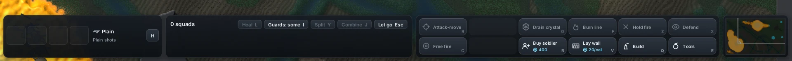
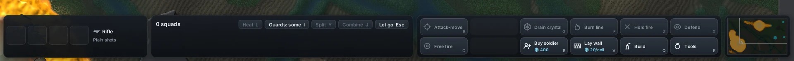
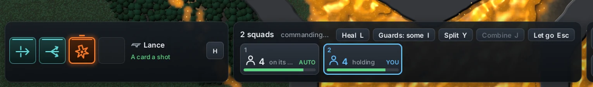
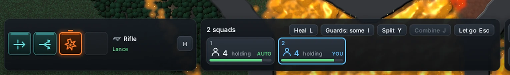
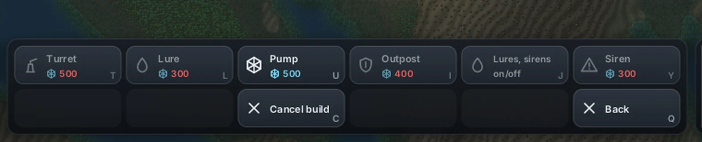
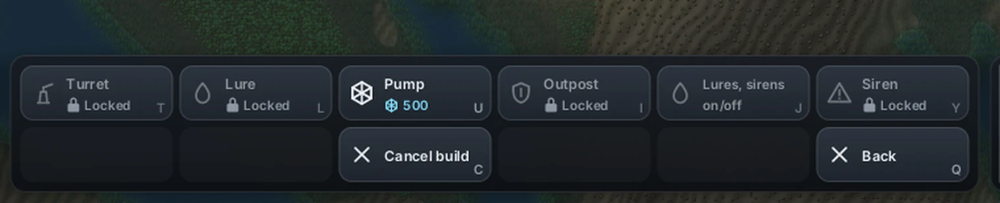
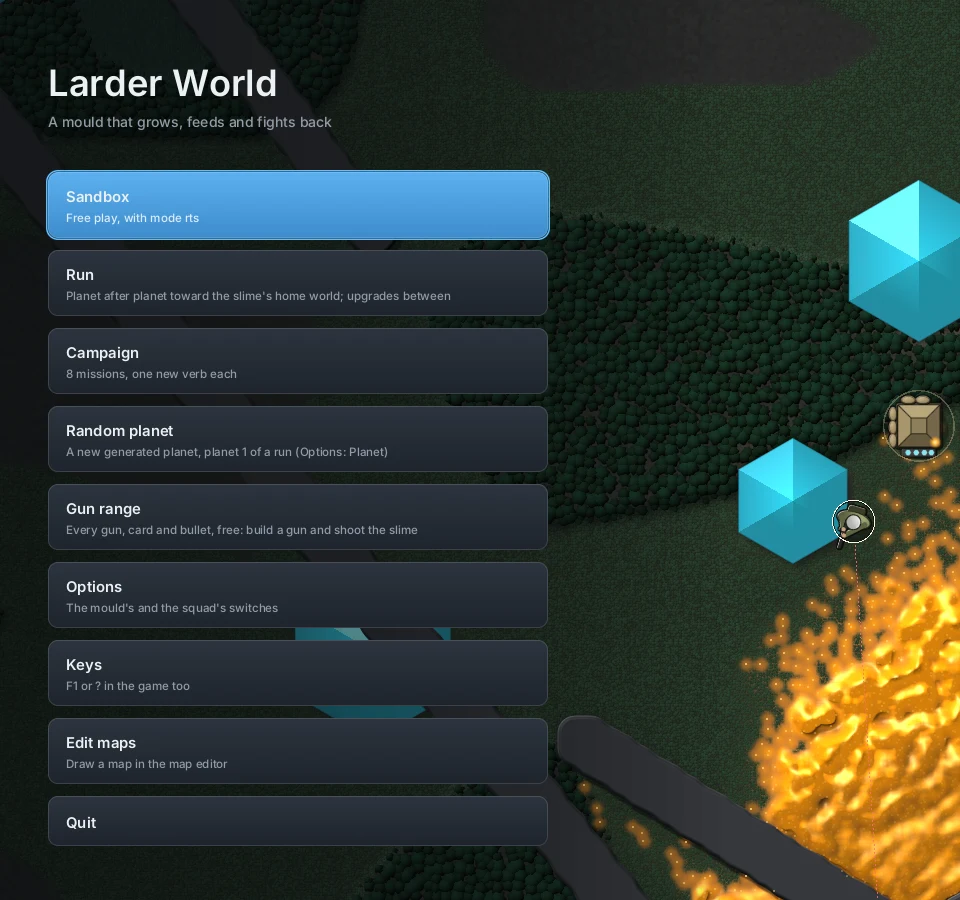
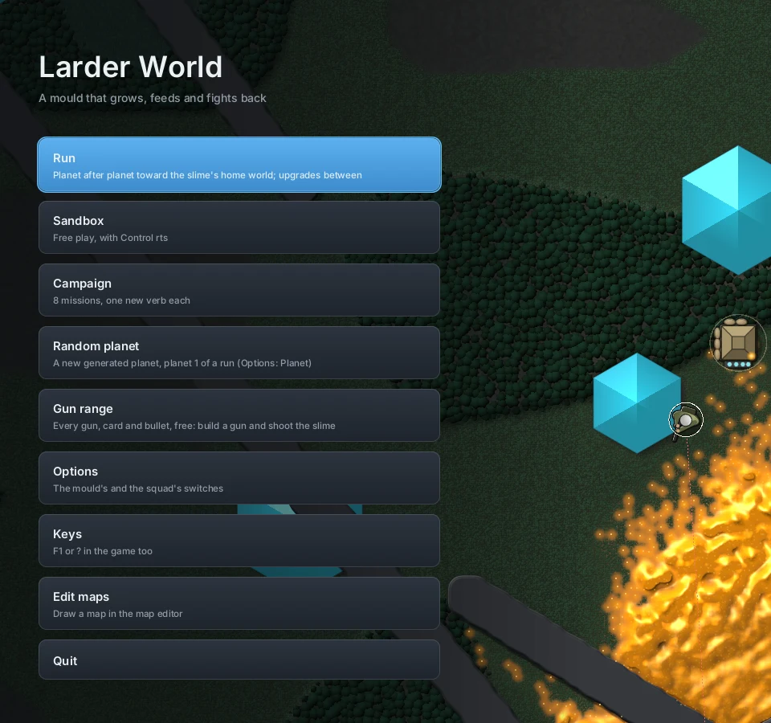
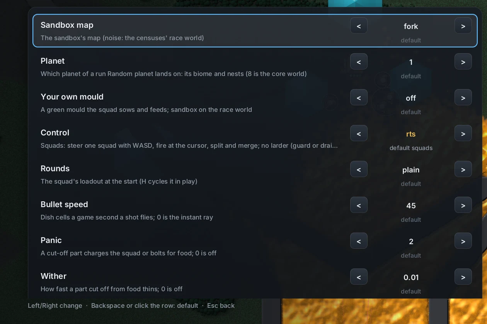
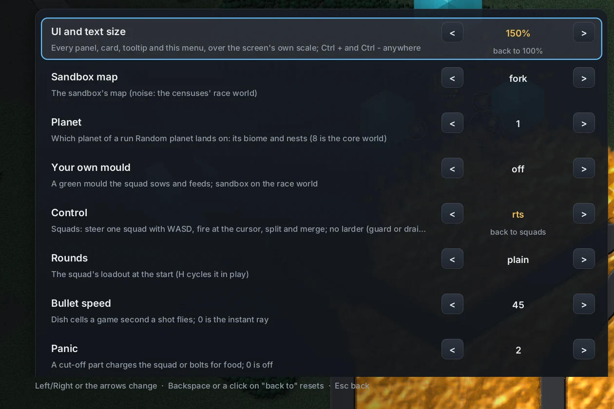

<title>Menu and HUD Fixes</title>
<meta name="claude:viewport-fit-sides" content="cover">
<link rel="stylesheet" href="https://fonts.googleapis.com/css2?family=Inter:wght@400;500;600&family=Space+Grotesk:wght@500;600&display=swap">
<style>
/* One column: each fix as a before/after pair with its numbers in the caption. */
:root { --bg:#f3f4f6; --fg:#16191d; --muted:#5b6370; --panel:#ffffff; --line:#d9dde3; --accent:#1f8fa8; --tag:#b4561f;
  --display:"Space Grotesk",Inter,system-ui,sans-serif; --body:Inter,system-ui,sans-serif; }
@media (prefers-color-scheme: dark) { :root:not([data-theme="light"]) { --bg:#0f1215; --fg:#e8ebee; --muted:#98a1ad; --panel:#171b20; --line:#2a3038; --accent:#5cc4dc; --tag:#f0a070; color-scheme:dark } }
:root[data-theme="dark"] { --bg:#0f1215; --fg:#e8ebee; --muted:#98a1ad; --panel:#171b20; --line:#2a3038; --accent:#5cc4dc; --tag:#f0a070; color-scheme:dark }
body { background:var(--bg); color:var(--fg); font:15px/1.55 var(--body); padding-left:max(16px,env(safe-area-inset-left,0px)); padding-right:max(16px,env(safe-area-inset-right,0px)); padding-block:32px 48px }
main { max-width:1100px; margin:0 auto; display:grid; gap:28px }
h1 { font:600 2rem/1.15 var(--display); margin:0; text-wrap:balance }
h2 { font:600 1.15rem/1.3 var(--display); margin:0 }
p { margin:0; max-width:68ch }
.lede { color:var(--muted) }
section { display:grid; gap:10px }
figure { margin:0; background:var(--panel); border:1px solid var(--line); border-radius:10px; overflow:hidden; min-width:0 }
figure img { display:block; width:100%; height:auto }
figcaption { padding:10px 14px; font-size:.9rem; color:var(--muted) }
figcaption b { color:var(--fg); font-weight:600 }
.when { display:inline-block; font:600 .72rem/1 var(--body); letter-spacing:.06em; text-transform:uppercase; margin-right:8px }
.before .when { color:var(--tag) }
.after .when { color:var(--accent) }
.k { font-variant-numeric:tabular-nums; color:var(--fg); font-weight:600 }
.pair { display:grid; grid-template-columns:1fr 1fr; gap:14px }
.stack { display:grid; gap:10px }
@media (max-width:760px) { .pair { grid-template-columns:1fr } }
ul { margin:0; padding-left:1.2em; display:grid; gap:4px }
.note { color:var(--muted); font-size:.9rem }
</style>
<main>
  <header style="display:grid;gap:8px">
    <h1>Menu and HUD fixes</h1>
    <p class="lede">The first step from the three-reviewer review of the menus and HUD (11-15), plus two asks from the whole-game review: Run first on the start menu, and the walkers now and the goal beside the run's 2% bar. Frames at 1920×1080 from the cloud's software GPU. "Before" is main with the UI-size work (#334); "after" is this change.</p>
  </header>

  <section>
    <h2>The bar in a run, 100%</h2>
    <div class="stack">
      <figure class="before"><figcaption><span class="when">Before</span>the gun strip says <b>Plain / Plain shots</b>, and its <b>H</b> button only raises "change it in the shop"</figcaption></figure>
      <figure class="after"><figcaption><span class="when">After</span>the gun's name, <b>Rifle</b>, then what its cards make; no H in a run (the tooltip says the shop changes the gun)</figcaption></figure>
    </div>
  </section>

  <section>
    <h2>The run's goal</h2>
    <div class="stack">
      <figure class="before"><figcaption><span class="when">Before</span>at 1:10, <b>(0%)</b> and nothing on how far there is to go</figcaption></figure>
      <figure class="after"><figcaption><span class="when">After</span><b>12,630 walkers now → 252</b> (2% of the peak counted from 1:00); before 1:00 it reads "counting from 1:00" and the walkers now</figcaption></figure>
    </div>
  </section>

  <section>
    <h2>Squad tiles and the squad header, 100%</h2>
    <div class="stack">
      <figure class="before"><figcaption><span class="when">Before</span>the header's second line cut to <b>commanding...</b>; the AUTO squad's tile reads <b>on its ...</b>; the gun strip <b>Lance / A card a shot</b></figcaption></figure>
      <figure class="after"><figcaption><span class="when">After</span>no second line (the YOU tile says it); the AUTO tile says what it does, <b>holding</b>; the gun strip <b>Rifle / Lance</b></figcaption></figure>
    </div>
    <p class="note">Not pictured: with the build page open in squad mode, the header used to show Split Y, Combine J, Guards I and Heal L, which the card takes first (Siren, lures on/off, Outpost, Lure). A key now shows only where no command on the card takes it. A test covers it; the picture tool cannot open that page in squad mode.</p>
  </section>

  <section>
    <h2>The build page in a run, 100%</h2>
    <div class="stack">
      <figure class="before"><figcaption><span class="when">Before</span>Turret <b>500</b> in red with <b>500</b> banked: it reads as "can't afford", but it is locked</figcaption></figure>
      <figure class="after"><figcaption><span class="when">After</span>a lock and <b>Locked</b> in grey; red is kept for want of food</figcaption></figure>
    </div>
  </section>

  <section>
    <h2>Start menu, 100%</h2>
    <div class="pair">
      <figure class="before"><figcaption><span class="when">Before</span>Sandbox first and lit</figcaption></figure>
      <figure class="after"><figcaption><span class="when">After</span>Run first and lit (Enter starts a run); Sandbox's line names changed rules by label and leaves the UI size out</figcaption></figure>
    </div>
  </section>

  <section>
    <h2>Options, 150%</h2>
    <div class="pair">
      <figure class="before"><figcaption><span class="when">Before</span>UI size the <b>15th of 15</b> rows, below the fold; one click on its row reset it to 100%; "default" under every value</figcaption></figure>
      <figure class="after"><figcaption><span class="when">After</span>UI size first; a click on a row only takes the focus; <b>back to 100%</b> under a changed value resets it; All to defaults keeps the UI size</figcaption></figure>
    </div>
  </section>

  <section>
    <h2>The hover card</h2>
    <p>No picture: it runs on real time, which the picture tool does not. A click used to put away only the card already up, so aim sliding onto the home crystal while firing raised a new one 0.35 s later. Now there is no card while a mouse button is held or WASD steers, and what the aim reaches meanwhile stays away until the cursor is on something else. Near the right edge or the bar the card goes to the cursor's other side instead of under it.</p>
  </section>

  <p class="note">Source and commands: <code>Reports/menu-fixes-2026-11-15/</code>. Still to come from the review: one layout for the bottom row so the gun strip stops shrinking at 200%, stars on the HUD, and the shop's slots beside its cards.</p>
</main>
